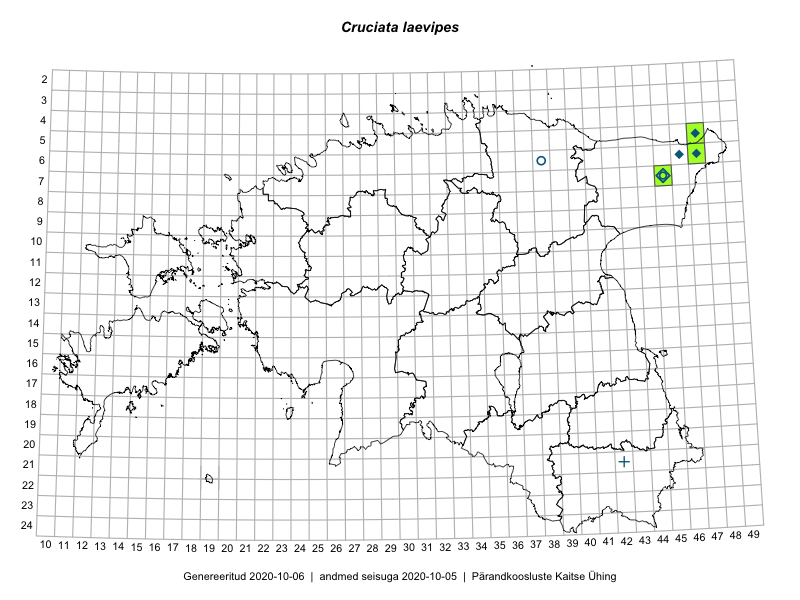

Cruciata laevipes
Uuendatud: 2016-12-02
Kaardile koondatud taksonid: Cruciata laevipes Opiz

Kaart põhineb 5 kirjel, neist vaatlusi 4 ja eksemplare 1. Taksonit on leitud 3 ruudust.
Viited andmebaasikirjetele